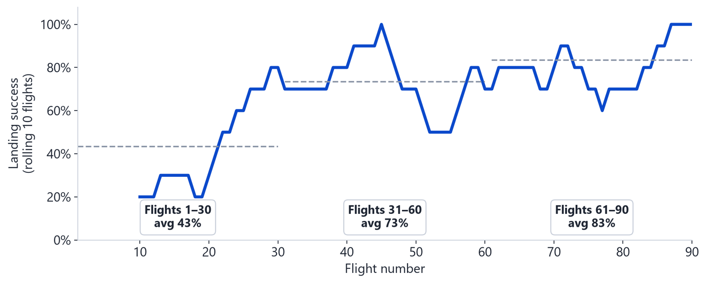
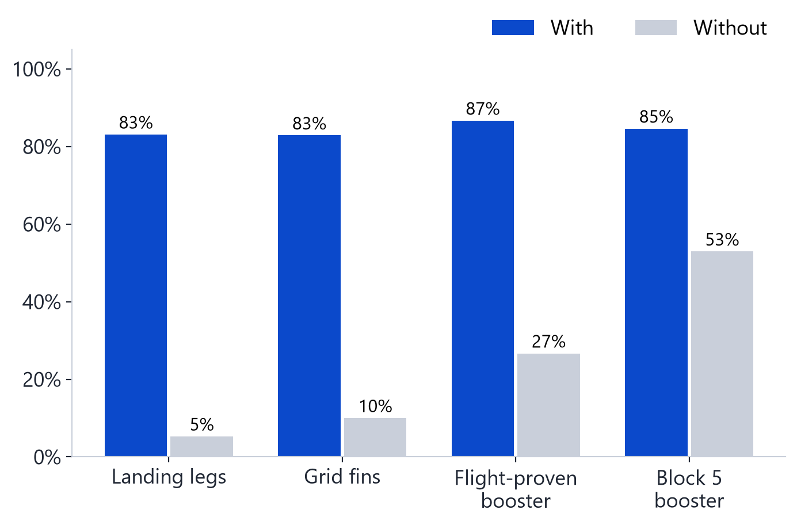
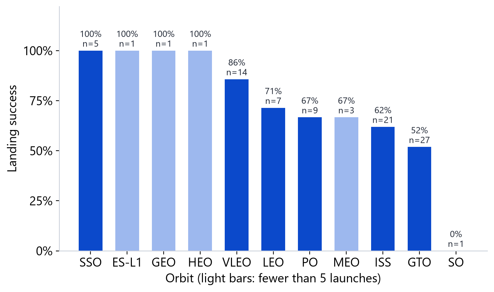
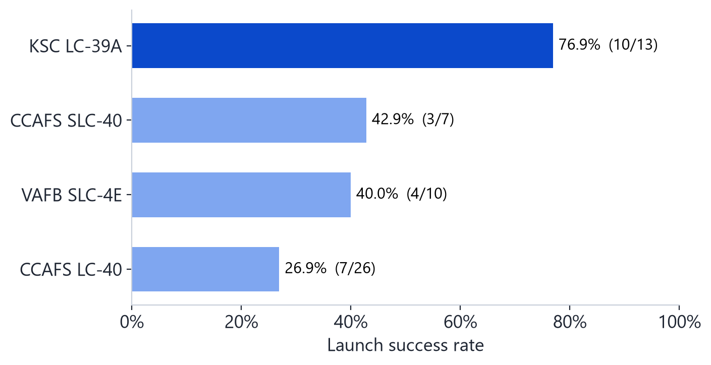
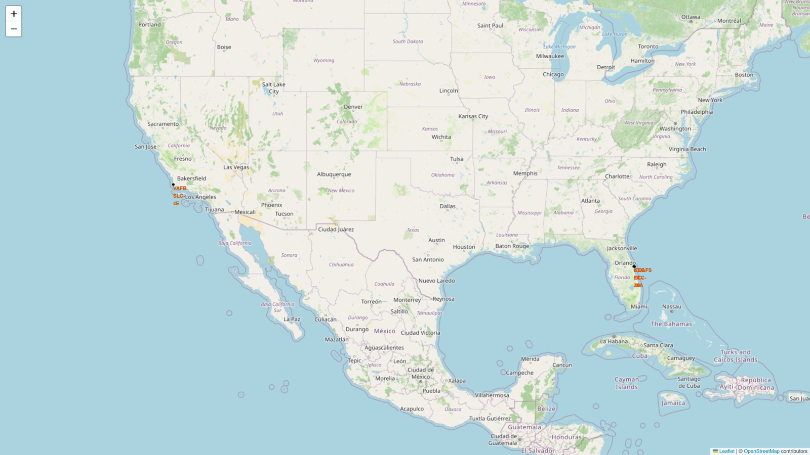
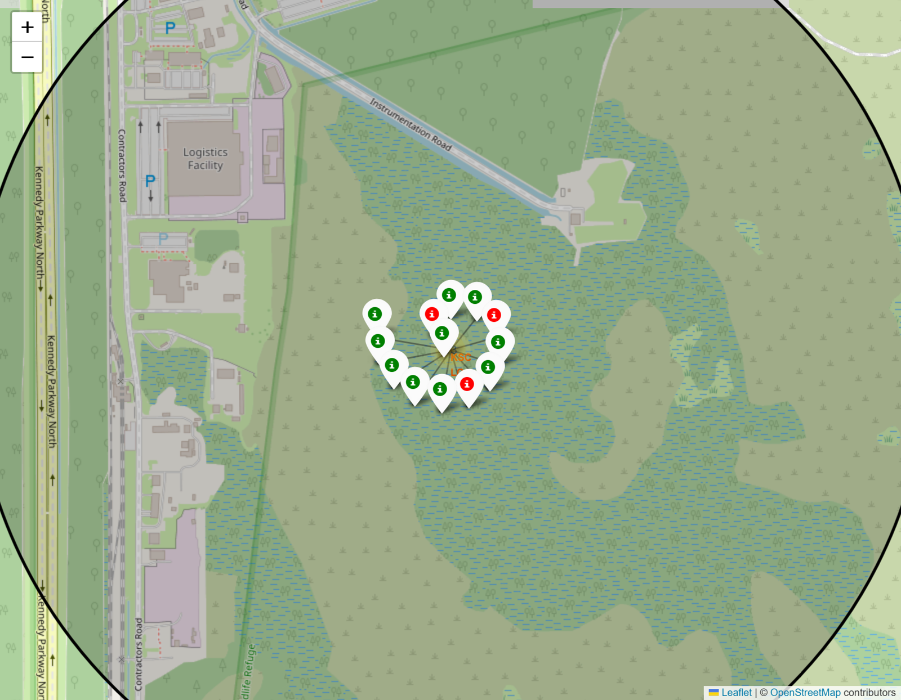
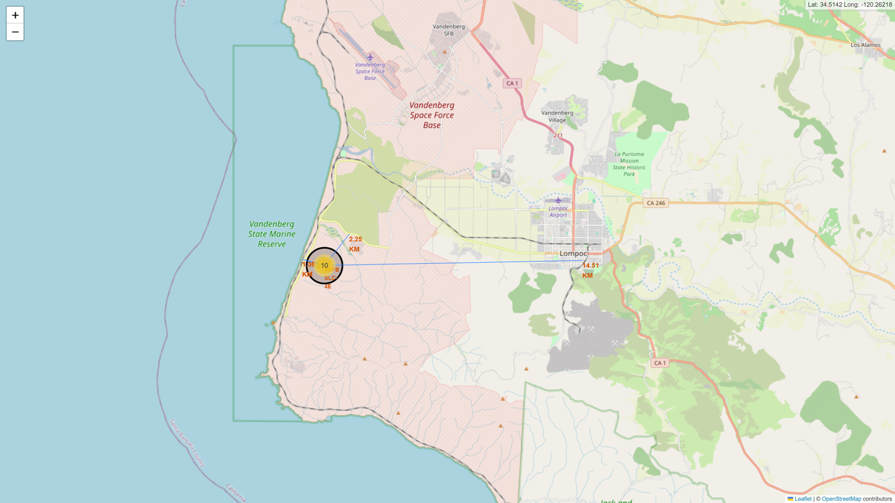
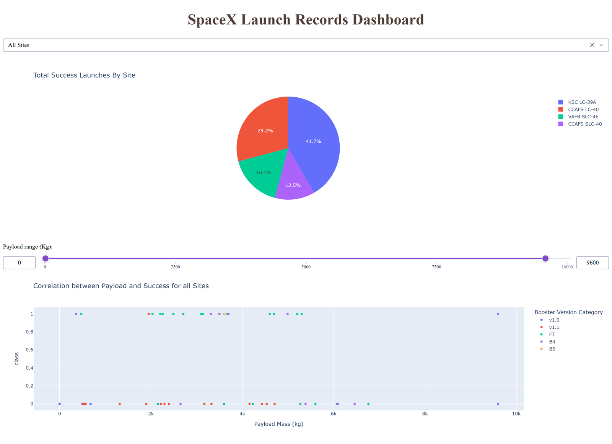
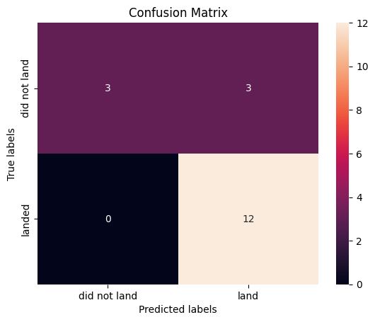

IBM Data Science Capstone
I collected 10 years of public SpaceX launch data, explored what makes a landing succeed, and trained four classifiers to predict it. Knowing whether the booster comes back tells you what a launch really costs.
SpaceX advertises Falcon 9 launches at about $62M. Other providers charge $165M or more, and most of the difference comes from recovering and reusing the first stage.
Working as a data scientist for a fictional competitor, Space Y, I wanted to answer three questions:
Eight steps, each in its own notebook or script in the repository.
The main patterns from the analysis, in order of how much they matter.
Landing success was 43% over the first 30 flights, 73% over the next 30 and 83% over the last 30. Every site and orbit got better with flight number, so some of what looks like a site or payload effect is really SpaceX getting better at landing.

Boosters with landing legs landed 83% of the time, compared with 5% without. Re-used boosters landed 87% of the time, while first-flight boosters landed 27% of the time.

ES-L1, GEO, HEO and SSO landed every time, but each has only a handful of launches. GTO is the hardest of the common orbits at 52%, because those missions leave little fuel for the landing.

KSC LC-39A has the best record at 76.9%. CCAFS LC-40 has the lowest at 26.9%, partly because most of the early test flights launched from there.

All four sites are on the coast, so rockets fly out over the ocean. At Vandenberg the pad is about 1.3 km from the coastline and the railway and 2.3 km from the highway, but 14.5 km from the nearest city, Lompoc.



The Plotly Dash app lets you pick a launch site and a payload range. The pie chart shows how successes are spread across sites, and the scatter plot shows payload against outcome, coloured by booster version.
Payloads between 2,000 and 5,000 kg had the highest success rate (55%), and the FT booster landed 16 of its 24 launches.

Each model was tuned with 10-fold cross-validation on 72 launches and tested on 18 launches it had not seen.
| Model | CV accuracy | Test accuracy |
|---|---|---|
| Logistic Regression | 84.6% | 83.3% |
| SVM | 84.8% | 83.3% |
| Decision Tree | 86.1% | 83.3% |
| KNN | 84.8% | 83.3% |
